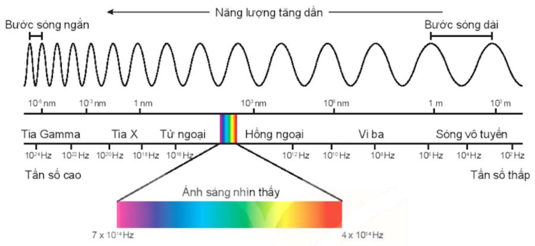

Xác định loại bức xạ theo tần số, bước sóng
Dựa vào tần số (bước sóng) của các bức xạ trong thang sóng điện từ

- Tốc độ truyền sóng điện từ trong chân không là $c=3\cdot10^{8}\ \text{m/s}$.
- Trong mọi môi trường vật chất, tốc độ truyền của sóng điện từ đều nhỏ hơn $c$.
- Tần số của bức xạ: $f=\dfrac{c}{\lambda}$, với $f$ là tần số (Hz), $c=3\cdot10^{8}\ \text{m/s}$, $\lambda$ là bước sóng (m).
Vệ tinh địa tĩnh – cường độ sóng
- Thông tin được đài phát phát đi, vệ tinh thu nhận tín hiệu đó và phát trở lại Trái Đất. Các điểm trên mặt đất nhận được thông tin đó thông qua đầu thu tín hiệu.
- Cường độ sóng mà máy thu vô tuyến ở mặt đất ngay phía dưới vệ tinh thu được: $I=\dfrac{P}{4\pi r^{2}}$.